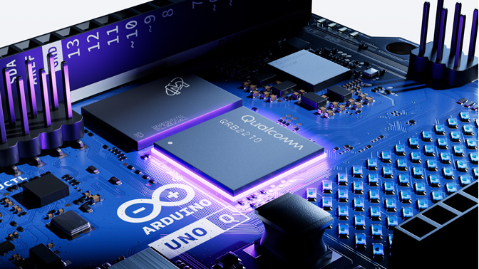

Workshop · Presencial
Arduino Básico
Aprende a programar microcontroladores y a conectar sensores y actuadores. Un punto de partida práctico para tus proyectos de electrónica y mecatrónica.
Ponente: Nombre del ponente
- Nivel
- Principiante
- Duración
- 8 horas
- Modalidad
- Presencial
- Requisitos
- Ninguno

ELECTRÓNICA · CÓDIGO · PROTOTIPADOAPRENDER HACIENDO
De una idea a un circuito funcional
Descubre cómo el hardware y la programación se unen para crear proyectos interactivos. Aprende a conectar componentes, escribir código y comprobar tus resultados mediante prácticas guiadas.
-
01
Conecta componentes
Comprende los circuitos y las conexiones básicas.
-
02
Programa tu placa
Escribe instrucciones y controla las salidas digitales.
-
03
Experimenta y construye
Combina sensores y actuadores en pequeños proyectos.
Sobre este workshop
Texto general de ejemplo: conocerás la plataforma Arduino, aprenderás los fundamentos de la programación para microcontroladores y construirás pequeños circuitos que interactúan con el mundo físico.
Lo que aprenderás
- Conceptos básicos de electrónica
- Prog ramar una placa Arduino
- Leer sensores y controlar actuadores
Temario
Clase 1: Introducción a Arduino
- Apartado 1 (texto de ejemplo)
- Apartado 2 (texto de ejemplo)
- Apartado 3 (texto de ejemplo)
- Apartado 4 (texto de ejemplo)
Repositorio de código
Código de los ejemplos y material de apoyo. Las clases en sí son exclusivas de quienes se inscriben.
Ver repositorio